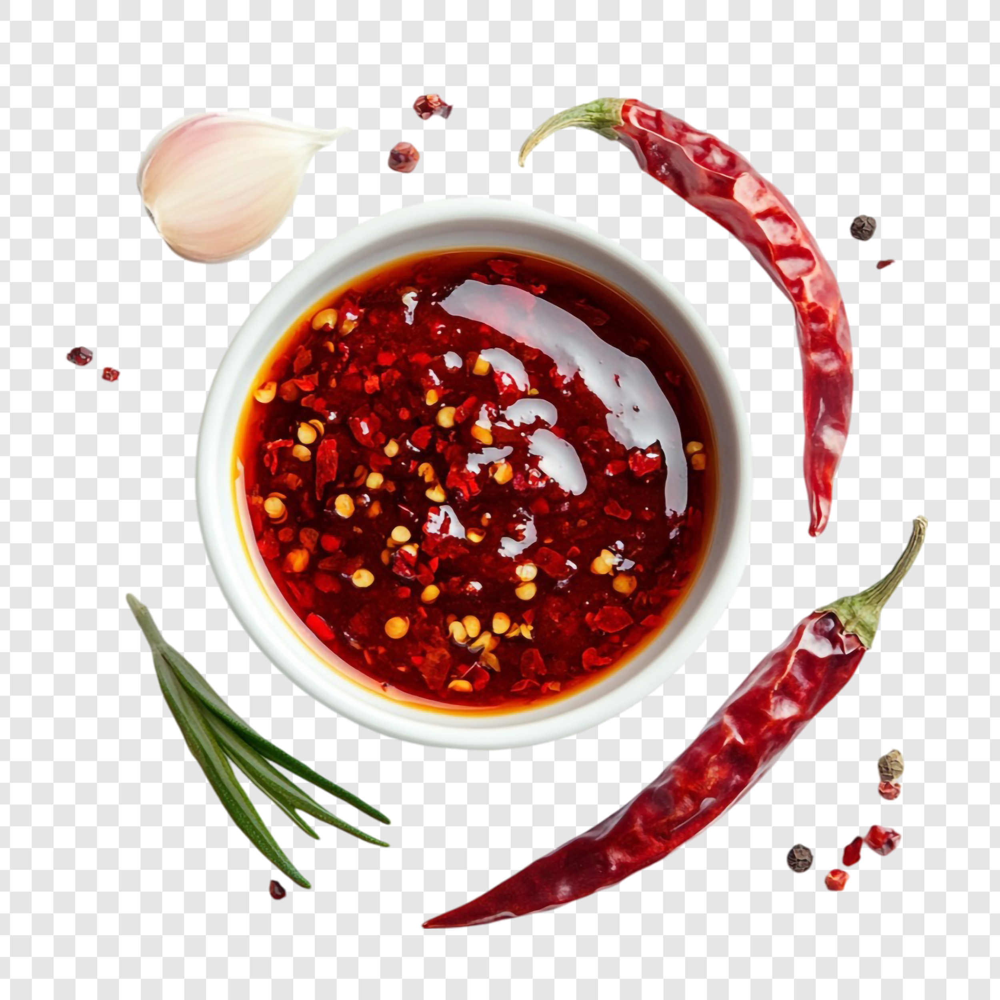

Home
Chili Crisp

Description
Toppings on food are great. They can be a good finishing touch to round up a dish and create an amazing gastronomic experience. The meal seems too rich? Add some acidity to cut through the richness. Have something sweet and gooey? Try adding some flaky salt on top. Here, we will be exploring one of the most popular Asian toppings, the chili crisp.
The following recipe is based off of Brian Lagerstrom's website: www.brianlagerstrom.com
Ingredients
- peanut oil
- shallot
- garlic
- ginger
- star anise
- cinnamon sticks
- gochugaru (korean red chili powder)
- chili flake
- sesame seeds
- szechuan peppercorn
- peanuts
- honey
- monosodium glutamate
- salt
- fish sauce
- soy sauce
Steps
- Heat up the oil.
- Fry the sliced garlic until brown. Remove and place on a tray with paper towel.
- Fry the shallot until brown. Remove and place alongside the garlic.
- Further heat up the oil and add star anise, cinnamon, and ginger. Cook until the ginger is golden brown, and pour in gochugaru. Let it sit for a while, then strain the oil back into the pot.
- Reheat the oil, pour over more gochugaru, chili flake, szechuan peppercorn, and sesame seeds. Infuse for a while.
- Stir in peanuts, salt, honey, msg, fried shallots, and fried garlic. Crush the garlic and shallots before adding.
- Let cool completely.